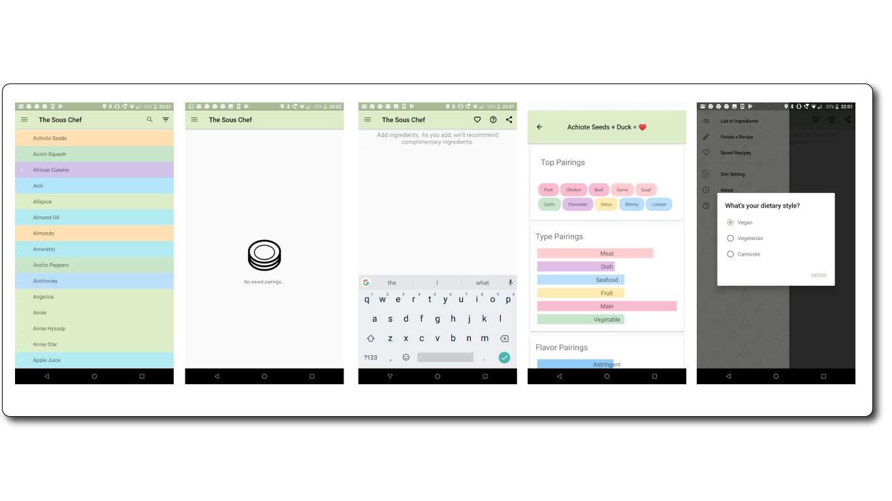
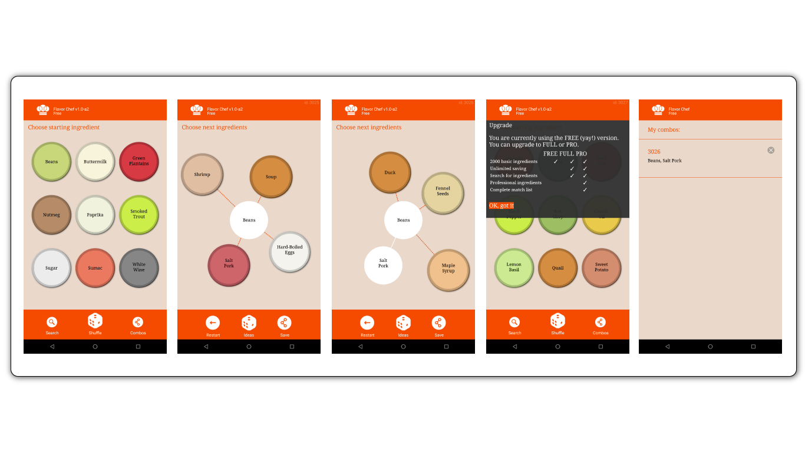
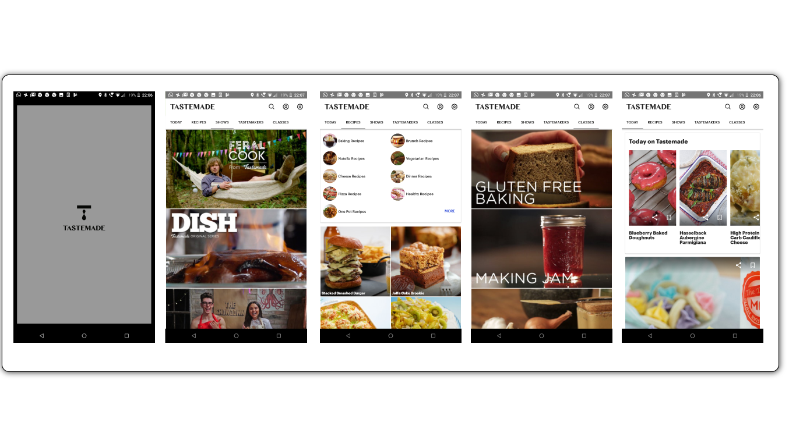
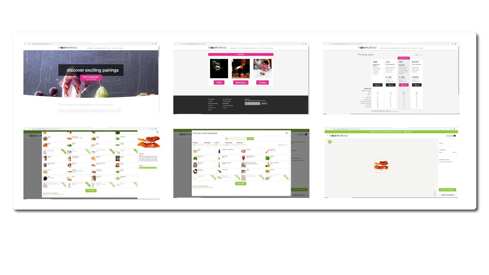

Sous Chef
The Sous Chef was the closest I could find to what I was trying to achieve, inspired by one of the same books as I, "The Flavor Bible" It is a rather simple app that allows you to search for an ingredient, and then it will subsequently show matching pairs to go with the ingredient.
The app has a section where the user can write down notes for recipes they might want to create and the ingredients have also been colour coded into categories.
Flavour Chef
The Flavor Chef App is similar to the Sous Chef, but a lot weaker in my opinion. The Sous chef may have lacked in Design in my opinion but had some clean functionality. The flavor Chef has neither. The App is a freemium ingredient pairing system, that randomly picks ingredients for you without a search function. Possibly good for some spur of the moment inspiration for ideas, however it would not keep me on there for long.
I want this app to help food lovers learn and expand their food knowledge and to also help inspire experienced chefs with their own creative goals.
Tastemade App
Tastemade is probably the most popular food app in the world at the moment, more focuesd on the casual, newbie cook providing a lot of "fun" dishes initially via facebook videos. They have expanded immensely to now selling branded cookware, recipe books, and a number of mini-channels through the internet.
The Tastemade app is focused mostly on straight up recipes and guides. Something that I wanted to move away from initially but I need to have some recipe access in there somewhere for my own app. The focus will be on Findindg ingredients and experimenting for yourself, however the occasional recipe will be available to see/share.
Foodpairing.com
Foodpairing.com is a professional service that allows the user to find food pairings based on scientific values. It comes with 50 free pairings for the casual user, then a subscription based service ranging from home-cook to professional chef level. prices start at a few euro/month to up to 40ish euro per month with varying benefits.
Has some very interesting features, such as sorting by seasonality and cuisine type. Has a huge database of ingredients aswell.